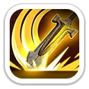
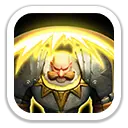
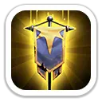
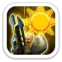
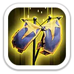
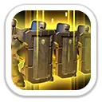
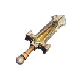
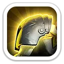
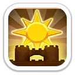

Меч горы
Массовый урон + контрольНаносит урон по области, отбрасывает ближайших врагов и оглушает их на 1 секунду.
100 / 110 / 120 / 130 / 140% атаки

Танк · контроль · гарнизон · усиление всей армии
Грегори — пехотный герой 10 поколения с упором на выживаемость, контроль и защиту. В Освоении он отбрасывает и оглушает врагов, способен вдвое уменьшать входящий урон, а после поражения продолжает усиливать союзников. В Экспедиции даёт всей армии атаку и защиту, шанс критического удара и дополнительно снижает получаемый пехотой урон.
Максимальные значения героя по актуальным базам. В исходной карточке встречается 1 110,85% защиты, но актуальные базы дают 1 110,88%.
Грегори держит переднюю линию, контролирует ближайших врагов и очень тяжело пробивается.

Наносит урон по области, отбрасывает ближайших врагов и оглушает их на 1 секунду.
100 / 110 / 120 / 130 / 140% атаки

Даёт шанс уменьшить получаемый Грегори урон наполовину.
10 / 20 / 30 / 40 / 50% шанс

После поражения Грегори повышает атаку всех союзных войск на 5 секунд.
+8 / 12 / 16 / 20 / 24% атаки
Очень цельный оборонительный набор: общие характеристики армии, критические обычные атаки и дополнительная защита пехоты.

Постоянно повышает атаку и защиту всех войск.
Атака +3 / 6 / 9 / 12 / 15% · защита +2 / 4 / 6 / 8 / 10%

Обычные атаки всех войск получают шанс нанести критический урон.
5 / 10 / 15 / 20 / 25% шанс

Снижает получаемый пехотой урон.
−4 / −8 / −12 / −16 / −20%

Максимальные бонусы: +1 921 атаки, +2 506 защиты, +37 597 здоровья героя, +277,5% смертоносности и +277,5% здоровья войск.


Очень крепкая передняя линия: контроль, шанс вдвое снизить урон и иммунитет к прерывающим эффектам от снаряжения.
Даёт всей армии атаку и защиту, а пехоте дополнительно снижает входящий урон.
Один из естественных сценариев героя: высокая живучесть и +15% смертоносности войск защитника от эксклюзивного снаряжения.
Рабочий вариант за счёт «Легиона Солнца» и шанса критов, но его полный набор заметно сильнее раскрывается в PvP и защите.
Грегори — мощный пехотный танк 10 поколения для PvP, гарнизона и Арены. Его ценность не только в собственной живучести: «Легион Солнца» стабильно усиливает всю армию, а «Несокрушимость» делает пехоту ещё крепче. Для F2P Бланшетт обычно проще и выгоднее получить через Колесо удачи, но для сильной обороны Грегори является одним из самых интересных героев поколения.